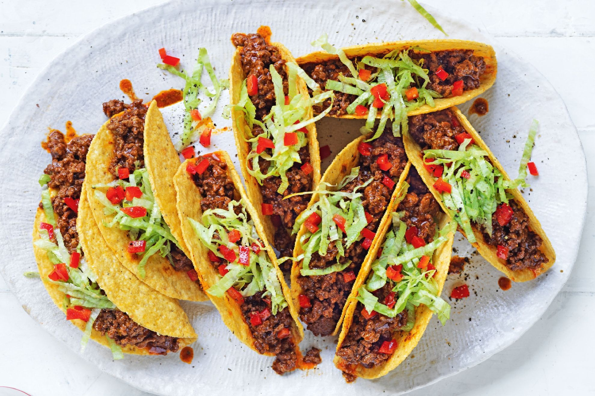

Taco Recipe

my tacos do not look exactly like this i got this image randomly
Description
This taco recipe will be an excellent addition to your weekly meals. They are also very customisable for your high protein, low fat, low carb, low GI, etc needs!
It only uses a few simple ingredients, most of which are probably sitting in your pantry! You can also use any sort of mince meat you like! So what are you waiting for!? Get to it!
Ingredients
Meat seasoning
- 500g of mince beef
- 2 tsp paprika
- 1 tsp garlic powder
- 1 tsp onion powder
- 1/2 tsp dried oregano
- 1/2 tsp cumin
- 1/2 tsp corn starch
- 2 cups of water
- salt and pepper
Pico de gallo
- 1 diced tomato
- 3 avocados
- 1 bunch of cilantro diced
- 3 minced garlic cloves
- 1 chopped onion
- 3 limes
Everything else
- Cheddar or Mexican-style cheese
- Sour cream
- Flour tortillas
Steps
Making the meat
- Put your pan on medium-high heaat and cook your meat until it is all brown.
- Take out your meat, set it aside, and drain some of the fat.
- Put in half of your onions and sweat them for 1-2 minutes.
- Add back your meat and add your seasonings, then later add 2 or 3 cups of water.
Making the pico de gallo
- Add in your chopped onions, diced tomatoes, minced garlic, and diced cilantro into your desired bowl.
- Add in 3 avocados. (or as much as you desire!)
- Mix everything togther and salt to taste.
- Squeese in the juice of 3 limes. (Make sure to taste test!)
Assembling the taco
- Warm up your flour tortillas.
- Add sour cream to your tortillas and then stack them with the meat, cheese, and pico de gallo.
- Dig in!
Return to top
Return to main page